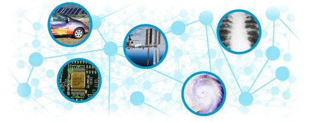

In this section, we've seen that science touches many aspects of our lives: from the mundane (e.g., the plastic lid on your morning coffee) to the world-changing (e.g., the eradication of smallpox). And while some of the impacts of science on society may not be clear boons, many are. Without science, we would not have even basic knowledge about promoting health, safety, and environmental stewardship. This knowledge informs both our personal and societal decision-making. Scientific knowledge also forms the basis for technological advancement. From a simple light bulb, to a complex computer, to genetically engineered rice — they are all man-made technologies based on basic scientific knowledge.
Here, we've seen how scientific knowledge affects your life everyday, often without much notice. But this doesn't mean that you have to accept whatever scientific information the media throw your way. In the next section, you'll learn how to become a critical consumer of scientific information and how an understanding of science can change the way you look at the world …